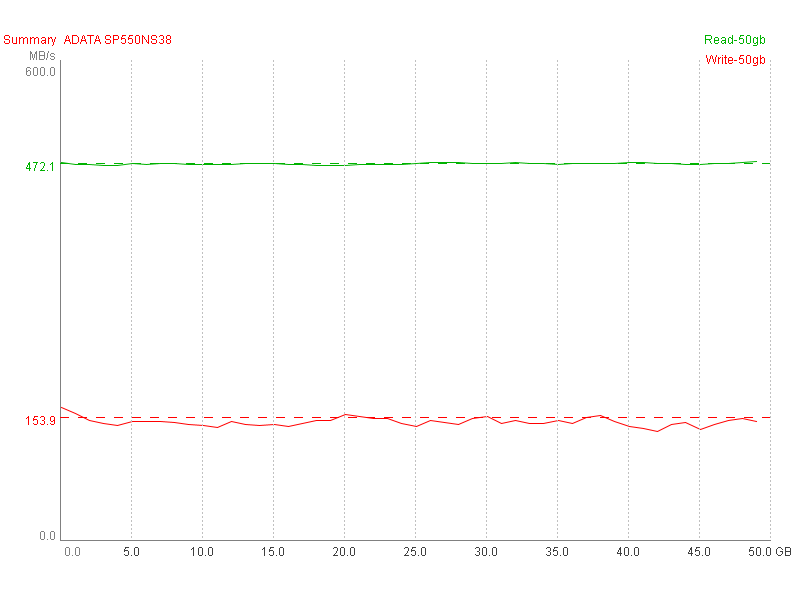
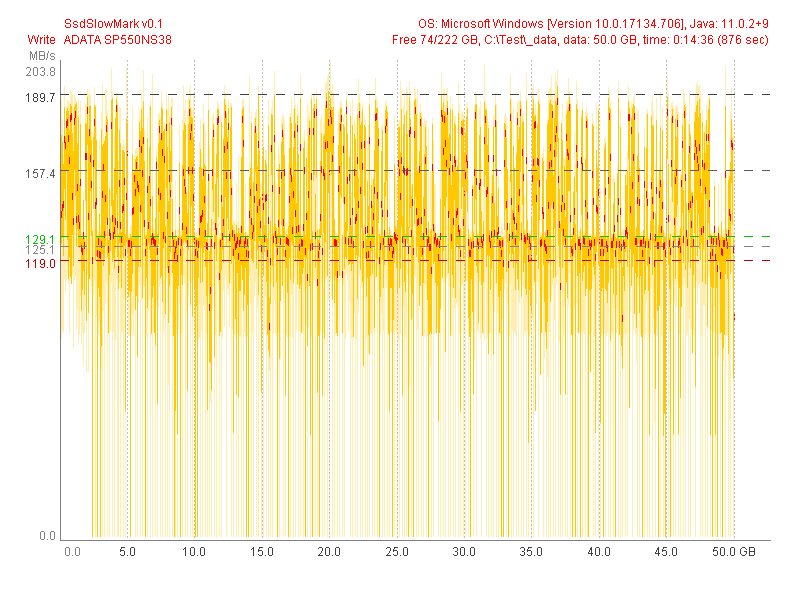
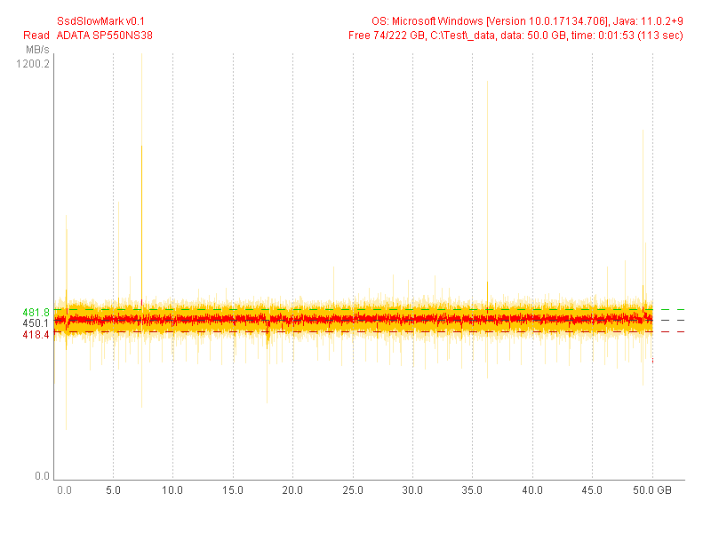

ADATA SP550NS38 (Test 50 GB) |
|
| SsdSlowMark v0.1, OS: Microsoft Windows [Version 10.0.17134.706], Java: 11.0.2+9 | |
| Read Performance | Write Performance |
avg.max: 450.1 MB/s, 100.0% (50.0 GB)
mid: 143.7 MB/s, 0.0% (0.0 GB)
min: 143.7 MB/s, 0.0% (0.0 GB)
typ.max: 481.8 MB/s, 100.0% (50.0 GB)
typ.min: 418.4 MB/s, 100.0% (50.0 GB)
|
avg.max: 189.7 MB/s, 23.3% (11.7 GB)
mid: 157.4 MB/s, 72.3% (36.1 GB)
min: 125.1 MB/s, 71.2% (35.6 GB)
typ.max: 129.1 MB/s, 76.3% (38.1 GB)
typ.min: 119.0 MB/s, 65.6% (32.8 GB)
|
|  | |
|  | |
|  | |